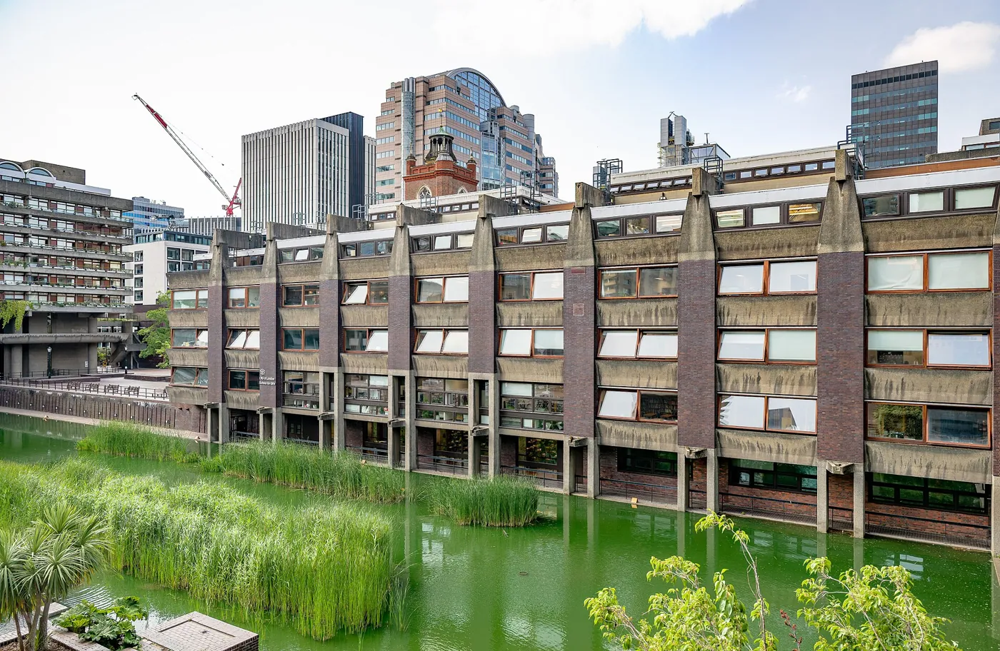
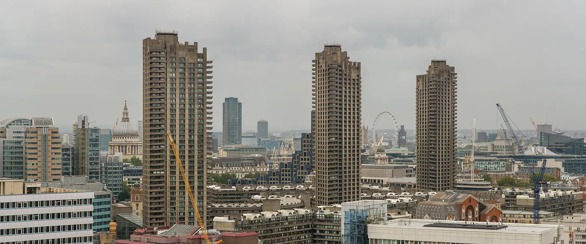
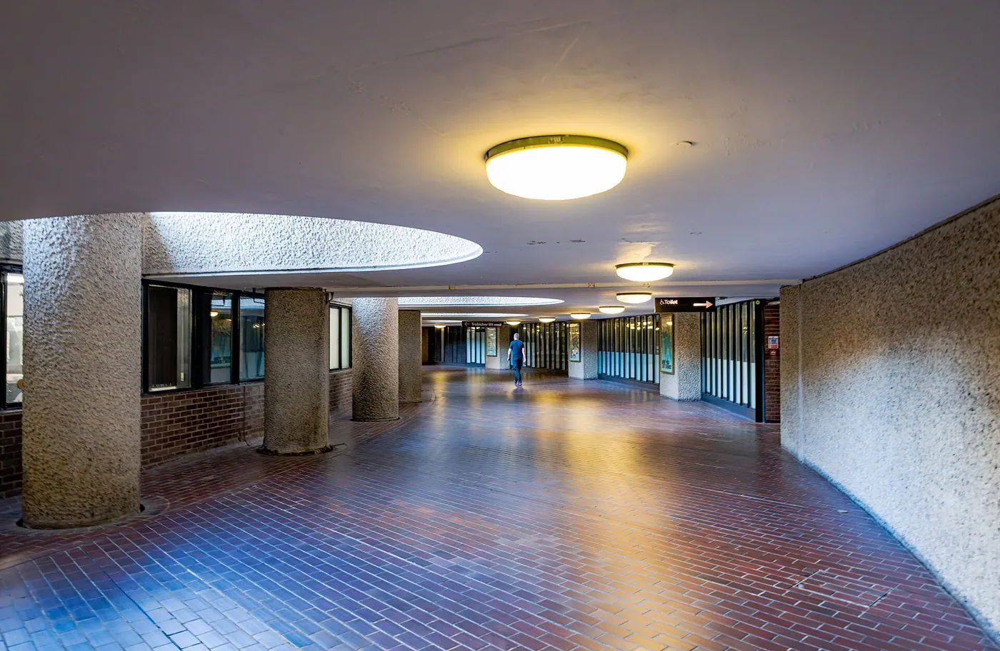
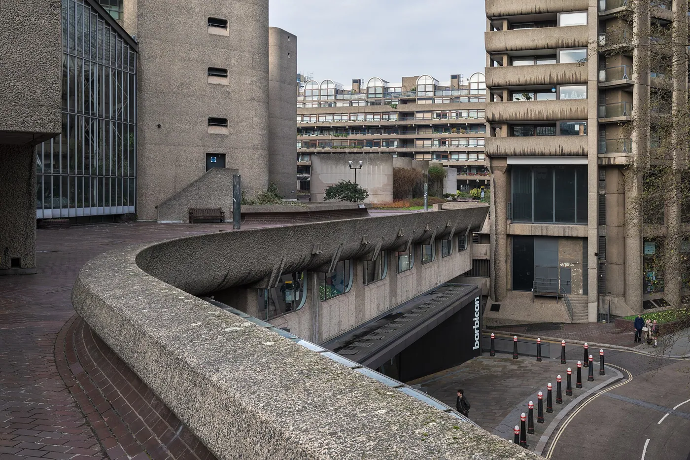
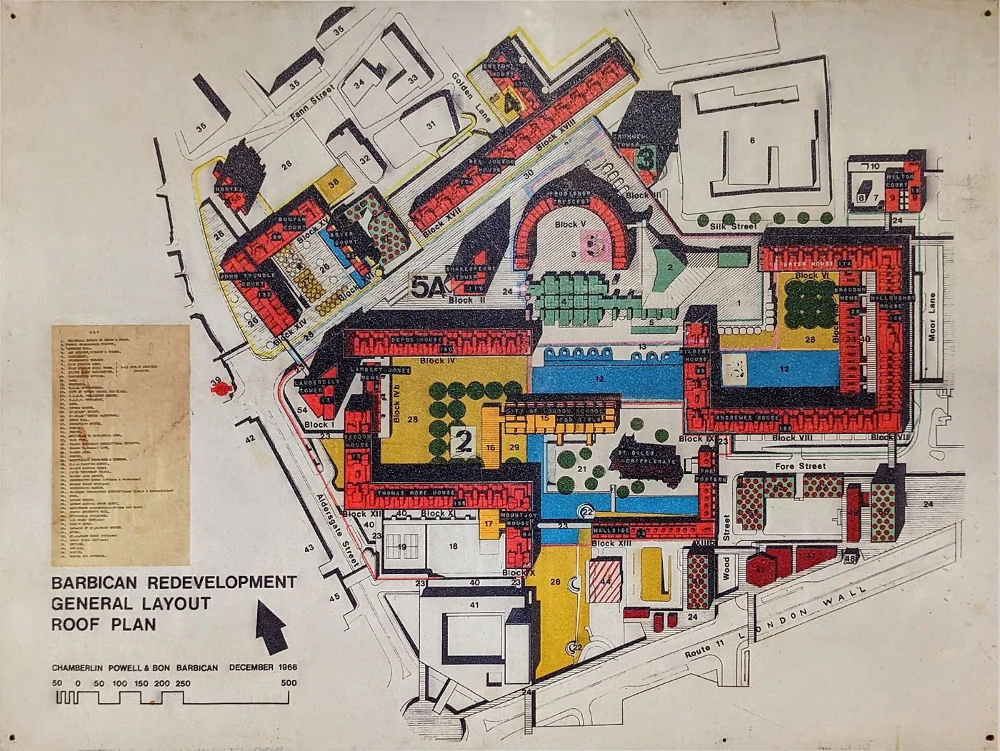

1/8 · Exterior · London: BARBICAN, Brandon Mews City of LondonPhoto: Tilman2007 · CC BY-SA 4.0 · source

2/8 · Exterior · London: BARBICAN, City of London School for girls City of LondonPhoto: Tilman2007 · CC BY-SA 4.0 · source3/8 · Exterior · London: BARBICAN, Defoe House City of LondonPhoto: Tilman2007 · CC BY-SA 4.0 · source

4/8 · Context · Barbican Estate towers from the terrace of the White Collar Factory, Old StreetPhoto: Colin · CC BY-SA 4.0 · source

5/8 · Interior · London: BARBICAN, Frobisher Crecsent City of LondonPhoto: Tilman2007 · CC BY-SA 4.0 · source

6/8 · Interior · London: BARBICAN, Frobisher Crecsent City of LondonPhoto: Tilman2007 · CC BY-SA 4.0 · source7/8 · Detail · London: BARBICAN, Defoe House, Defoe House City of LondonPhoto: Tilman2007 · CC BY-SA 4.0 · source

8/8 · Context · London: BARBICAN, Lake City of LondonPhoto: Tilman2007 · CC BY-SA 4.0 · source